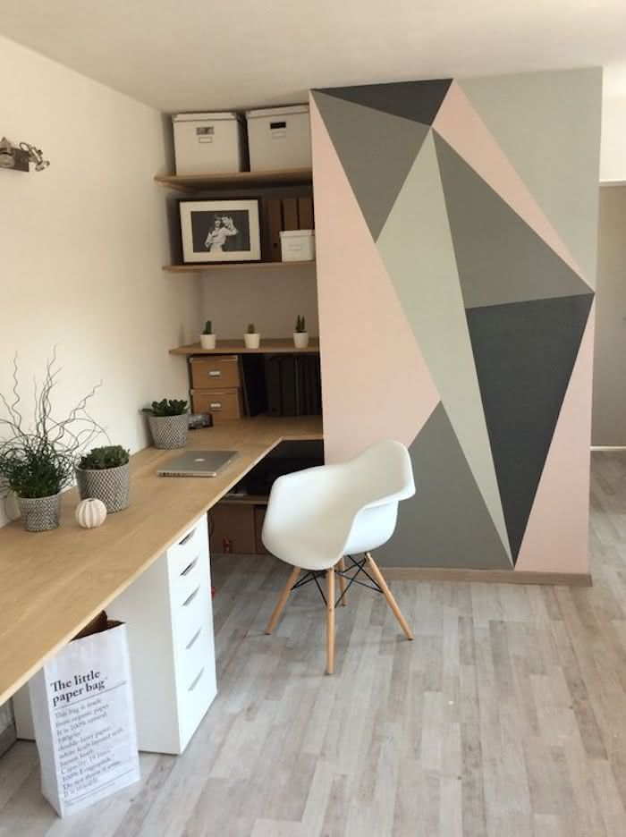
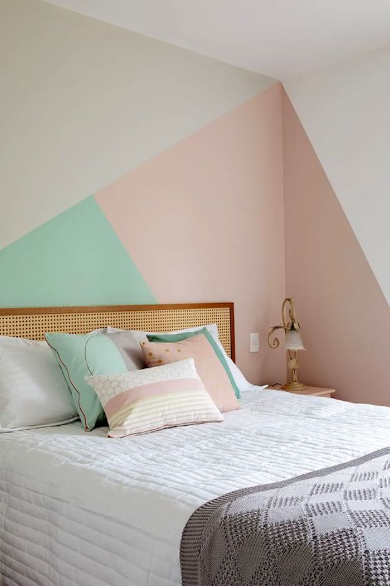
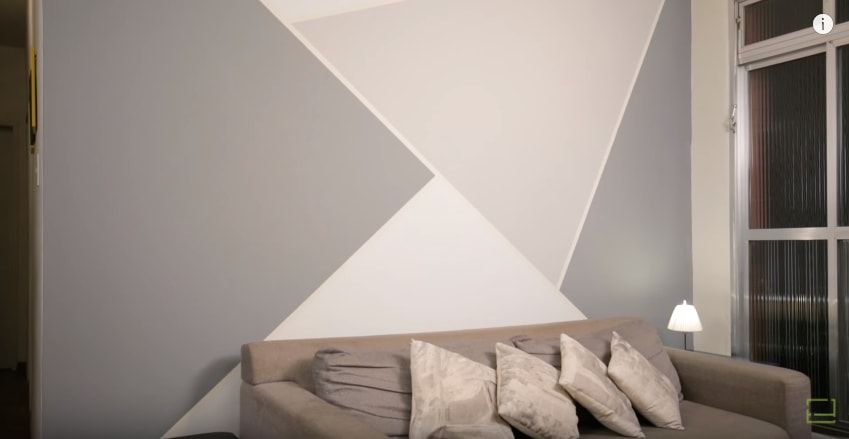
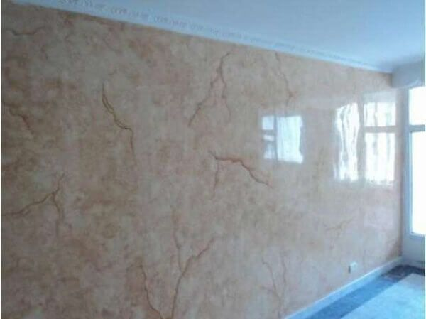
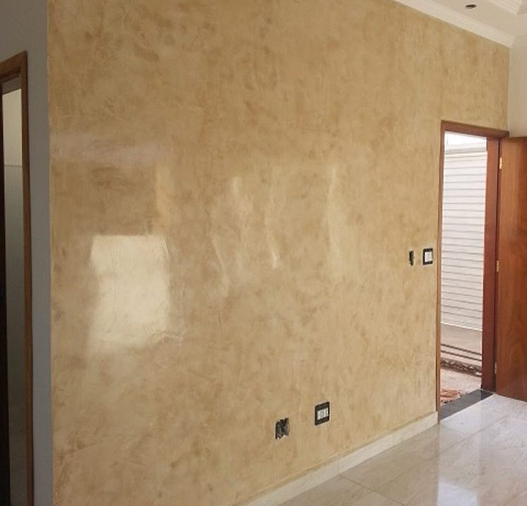
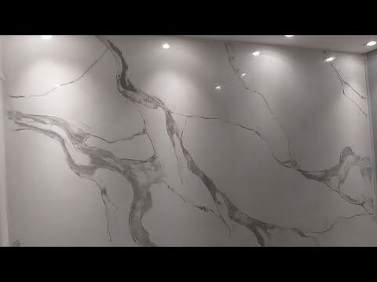
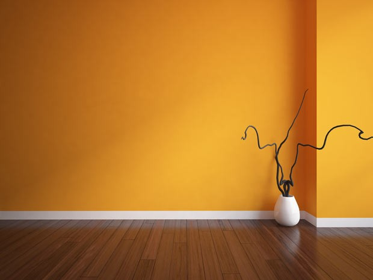
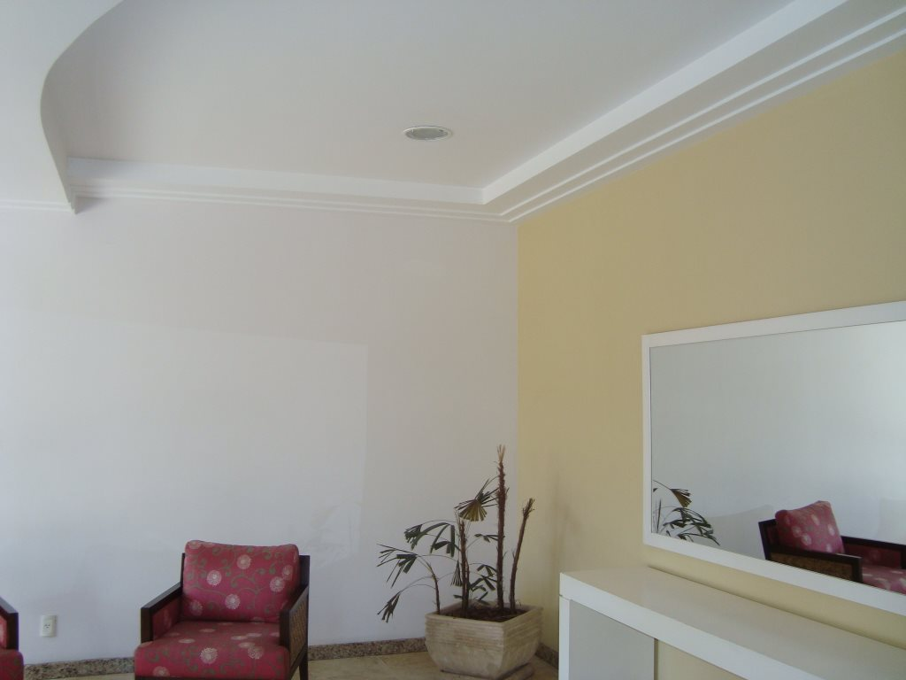
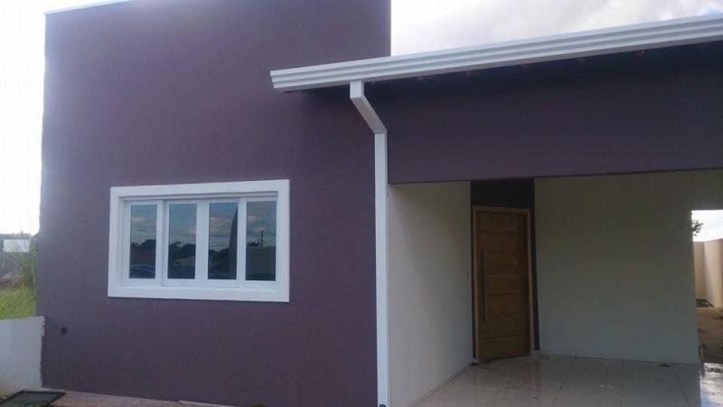

Pinturas
A pintura geométrica é uma ótima opção para quem pretende transformar o visual da casa ou até mesmo do apartamento alugado. Esse tipo de acabamento permite criar uma composição colorida, com direito a figuras geométricas e muito dinamismo.
  Cimento Queimado
Está pensando em reformar a casa? A textura de cimento queimado é uma ótima opção para decorar os ambientes de forma diferente e personalizada. A parede de cimento queimado é feita com um tipo de massa acrílica específica para gerar efeitos decorativos belíssimos. O resultado é uma decoração moderna, contemporânea e elegante no seu cômodo.


Marmorização
Marmorização é o processo no qual uma superfície recebe pintura e tratamento para ganhar o aspecto do mármore. Além de ser um procedimento simples e econômico, esse revestimento pode ser feito em paredes e bancadas. Ademais, colunas e até superfícies em madeira podem receber esse tipo de tratamento. A principal característica dessa técnica é, além da ilusão perfeita de um mármore, a originalidade.
  Fino
Para nós o Fino Acabamento representa o incomparável, a perfeição, o charme, pensar em cada detalhe, cuidar de cada detalhe, ter requinte, ter sofisticação, ter elegância e equilíbrio seguindo os princípios da arquitetura neo-clássica.
  